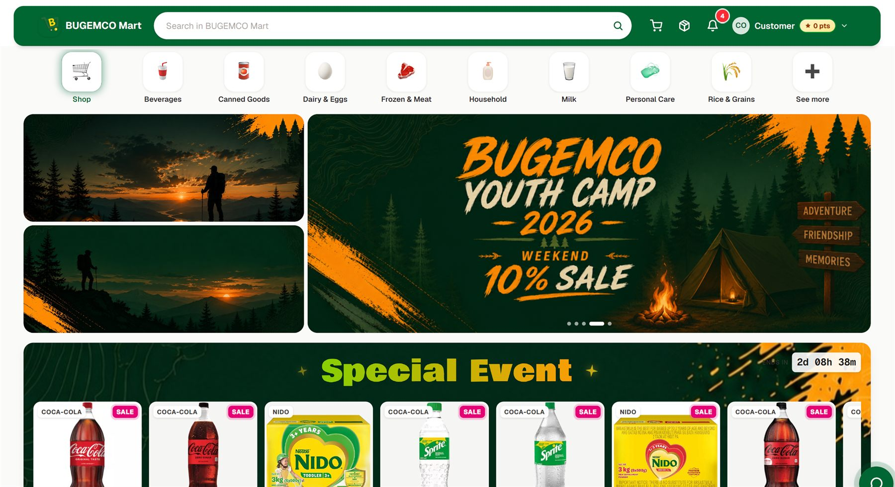
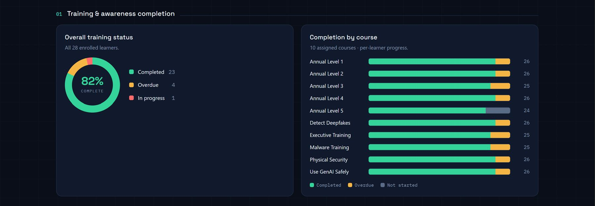
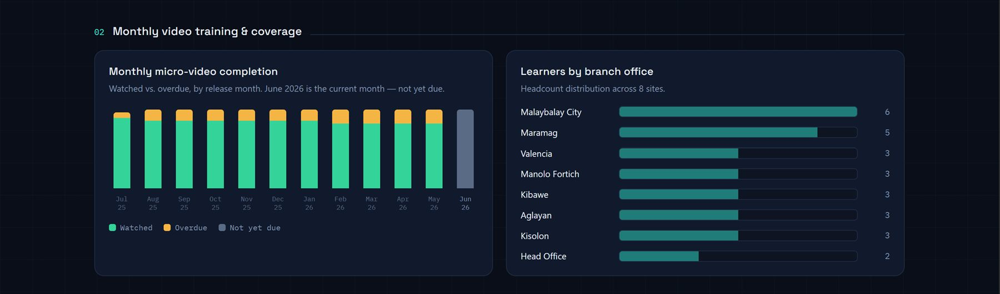
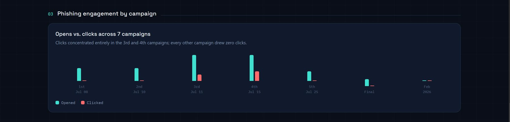
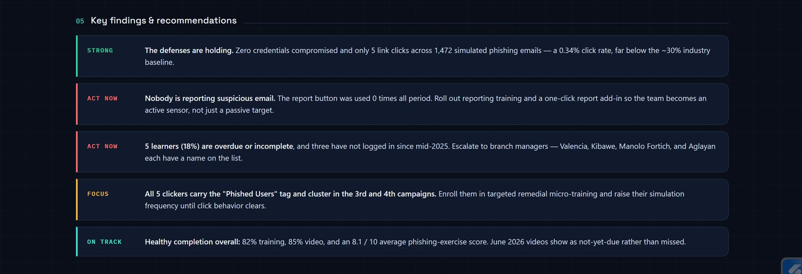

Design demo — rebuilt from the May 2026 PowerPoint. Not published.
BUGEMCO · Making Lives Better
ICT DEPARTMENT
Software Development & Information Security
May 2026 · Gipre F. Naparan, IT Supervisor — Software Development and Information Security
0
Systems reported
Four systems were shown to Mancom in May: the School Management System, the Coop Assurance Center System, BUGEMCO Mart and the Membership Information System. Each carries a May entry in its own tracking file.
0
Support areas covered
Six areas were listed on the May Support slide — ATM cards, the ATM machine, branch maintenance, technical requests, Youth Camp and the information drive. This counts the areas the deck listed, not the amount of work done.
0
Meetings & presentations
Four meetings were named on the May Others slide: the weekly Mancom meeting, the weekly policy review, the BLC system presentation, and the SCL Dura discussion. A count of what the deck listed, not a measured total.
Scroll to read
01 · Software Development
Four systems were shown to Mancom
- BUGEMCO Learning Center — School Management System
- Coop Assurance Center System
- BUGEMCO Mart — Online Store
- Membership Department — Membership Information System
0
Systems reported
Four systems were brought to Mancom in May. All four are marked In Progress in their tracking files.
0
Shown with a screenshot
2 of the 4 systems are shown here with a picture of the working software — BUGEMCO Mart and BUGEMCONNECT.
0
Screenshots held back
2 of the 4 screenshots were withheld because they show real people — a student's profile and a list of members by name. Both are waiting on a safe replacement before that system can be shown publicly.
—
Completion recorded
No completion figure exists for any of the four systems. Each tracking file reads “Progress: 0%”, which records that nothing was ever written down — not that no work has been done. No percentage is shown for any system in this section, and none should be offered if asked.
BUGEMCO Learning Center — School Management System
In Progress
The system BUGEMCO Learning Center uses to run the school — enrolling students, keeping records, grading, and billing.
What was reported in May
- Presented to BUGEMCO Learning Center at a system presentation meeting
- A working student records screen was shown to Mancom
Not recorded
How far along the system is, and which parts are finished, were reported to Mancom but not written down in the source deck.
Screenshot held back
The May deck's screenshot for this system is a live student profile. It shows a child's photograph, full name, date of birth, home address and a guardian's mobile number.
It has been kept out of this page and out of the repository. The original is stored privately for the owner to review, and a safe replacement screenshot should be captured before this system is shown publicly.
Coop Assurance Center System
In Progress
Handles the coop's assurance records — clients, product applications, renewals, claims and remittances.
What was reported in May
- A working dashboard was shown to Mancom
- Client, product application, renewal, claims and remittance screens are in place
Not recorded
The system's stage of completion was reported to Mancom but not written down in the source deck.
Screenshot held back
The dashboard screenshot for this system is not shown here. Its “Recent Activity” panel lists five people by name against their membership status, and this report is published on a public web page.
The original is kept safely in the private folder on the owner’s computer and has not been uploaded. Once it is confirmed as test data, or the names are blurred out, it can go back in.
BUGEMCO Mart — Online Store
In Progress
Lets members browse and order from BUGEMCO Mart online.
What was reported in May
- First time this system was brought to Mancom
- A working storefront was shown — product categories, promotional banners and a timed special event
Not recorded
How far along the store is, and when it is expected to open to members, were not written down in the source deck.

Membership Department — Membership Information System
In Progress
Holds member information for the Membership Department. It carries the name BUGEMCONNECT on screen.
What was reported in May
- Discussed with SCL Dura alongside the Queuing System
- The member-facing welcome screen was shown to Mancom
Not recorded
How far along the system is, and which parts are working, were not written down in the source deck.
02 · Information Security
Nobody gave away a password
- Cybersecurity training for staff
- Phishing simulation — fake scam emails sent to staff as a test
The original deck spent six slides on this. They are gathered into one section here.
0
Sets of credentials given away
Lower is better Programme to 17 June 2026 Read off the dashboard screenshot Not one of the 1,472 test emails led anyone to type a username or password on the fake page. Zero here is the best possible result.
0
Staff who clicked
Lower is better Programme to 17 June 2026 Read off the dashboard screenshot 5 of the 1,472 test emails sent had their link clicked — a click rate of 0.34%, against the department's limit of 1% or less.
0
Security training completed
Programme to 17 June 2026 Read off the dashboard screenshot 23 of the 28 enrolled staff have finished their security training (82%). 4 are overdue and 1 is part-way through.
0
Test emails sent
Programme to 17 June 2026 Read off the dashboard screenshot 1,472 fake scam emails were sent across 7 rounds to the 28 staff enrolled across 8 branch offices. 29 of them were opened.
Training completion
Of 28 staff enrolled, 23 have finished their security training, 4 are overdue and 1 is part-way through.
The phishing test
1,472 fake scam emails were sent across 7 rounds. 29 were opened, 5 people clicked the link, and nobody typed in a username or password. The report button was not used at all.
Every figure on this page is read off the dashboard in the screenshot beside it. That dashboard covers the whole awareness programme up to 17 June 2026 — it is not a May-only count.

What the dashboard showed
In plain words
- The defences held — no password was ever given away.
- Nobody is reporting suspicious email. The report button was used zero times, so staff are a passive target rather than an early warning.
- 5 of the 28 staff are overdue or part-way through their training, and three of them have not logged in since mid-2025.
- Everyone who clicked was in the same two rounds, so the same small group needs extra practice.
- Completion overall is healthy — 82% of training done and 85% of the short videos watched.
Taken from the dashboard's own summary panel, shown at the bottom right.




03 · Network
Network
Work on the coop's internet, cabling, and the connections between branches.
Not recorded
The May deck carried the heading "Network" and nothing else — no screenshot, no figures and no notes. The work was reported to Mancom on the day, but nothing about it was written down, so nothing is claimed here. This section has no summary of figures because there are none to summarise; a row of plausible-looking numbers would be an invention.
Writing the month's network work down as it happens — what was done, how much downtime there was, and any structured cabling installed — would let this section carry real figures from next month on.
The department tracks two things for the year: application uptime of 99% or better, and two structured cabling installations. Uptime is reported in the Annual Targets section.
04 · Support
Support
0
Areas the deck listed
Six areas were listed as headings on the May Support slide: ATM cards, the ATM machine, branch maintenance, technical requests, Youth Camp and the information drive. This is a count of what the deck listed, not a measured workload.
0
Events supported
2 events are on record for May — Youth Camp and the information drive. They are the only two named in the deck and in the support log.
—
Requests counted
No counts were recorded for May. ATM cards issued, ATM call-outs, branch maintenance visits, technical requests and average response time are all blank in the support log, so no figure is shown for any of them.
Where the department helped in May
- ATM cards
- ATM machine
- Branch maintenance
- Technical requests
- Youth Camp
- Information drive
Not recorded
The deck listed these six areas as headings only. How many ATM cards were issued, how many call-outs there were, how many branch visits were made and how quickly requests were answered were all reported to Mancom but never written down.
Pulling those five figures out of the ticketing system each month would let this section carry real counts from next month on.
The department's target is to start work on a request within 24 hours. There is no figure on record for May to measure that against.
05 · Meetings, Events and Team
Others
0
Meetings listed
4 meetings are named below: the weekly Mancom meeting, the weekly policy review, the BLC system presentation and the SCL Dura discussion. A count of what the deck listed, not a measured total.
0
Events listed here
1 event is named on this slide — Youth Camp. The information drive, the other event the department supported in May, is listed under Support. A count of what the deck listed, not a measured total.
0
Training sessions listed
2 sessions are named for May — Cybersecurity Awareness and Spiritual Enrichment. How many people attended either was never written down, so this counts sessions listed, not people trained.
0
Department items open
2 department items are named with no stage of completion recorded — the organisational structure and the hiring of an IT Specialist. Neither is shown as finished, because the deck does not say that either is.
Meetings
- Weekly Mancom meeting
- Weekly policy review
- BLC SMS meeting — system presentation
- SCL Dura — Membership Information System and Queuing System
Events
- Youth Camp
Training, seminars and webinars
- Cybersecurity Awareness
- Spiritual Enrichment
Department
- Organizational structure
- Hiring of an IT Specialist
Both were listed as headings in the deck with no stage of completion recorded, so neither is shown as finished.
06 · Where we stand against the year
Annual Targets
0
Targets shown below
6 rows from the department's 2026 deliverables sheet are charted below. They are the only figures in this report that come from an annual record rather than from the May deck.
0
At or better than target
5 of the 6 bars below are at or past their 2026 target: 10 of 10 system improvements proposed, 1 of 1 cybersecurity training attended, 100% application uptime against a 99% target, 100% of approved improvements delivered on time against a 90% target, and 0 major security breaches against a target of 0.
0
Not yet at target
1 of the 6 is short of its full-year figure: system maintenance completed stands at 50% against a 100% annual target.
0
Major security breaches
Lower is better 0 major security breaches have been recorded in 2026 against a target of 0. Here zero is the goal, not an empty cell.
Every bar above comes from the department's 2026 deliverables sheet. On the last one, zero is the goal — no major security breach has happened this year.
Next month
What this report says should happen next
The May deck carried no plan for June. Every item below is a follow-up this report itself raises, gathered in one place.
Salamat sa Gugma!
What this report says should happen next
- Capture a School Management System screenshot using test data, so that system can be shown publicly.
- Confirm the Coop Assurance dashboard's “Recent Activity” panel against the database, or blur the names, before that screenshot goes back in.
- Write the month's network work down as it happens, so next year's May section has something on it.
- Pull the ticketing system's figures — ATM cards issued, call-outs, branch visits, technical requests and response time — into the tracking files.
- Record May-only phishing totals in the department's phishing log, rather than relying on programme-to-date figures.
ICT Department · May 2026
Gipre F. Naparan — IT Supervisor, Software Development and Information Security
Where this report shows no figure, it is because the May deck did not carry one. Those blanks are deliberate.
Design demo — rebuilt from the May 2026 PowerPoint. Not published.